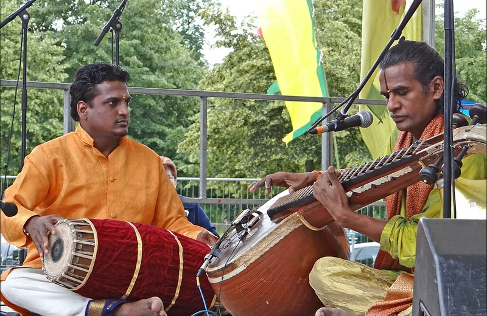

18 DEC6:00 PM
Solo Veena Kutcheri
Margazhi Veena Nada Mahotsavam: Raga Tanam Pallavi
Vidushi Dr. Meenakshi Sundaram presents an expansive Raga Tanam Pallavi in Raga Shankarabharanam set to Khanda Jati Triputa Tala.